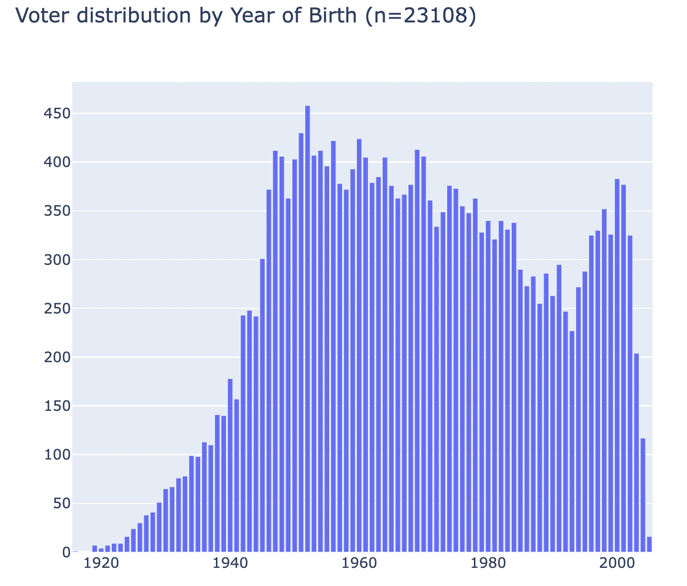
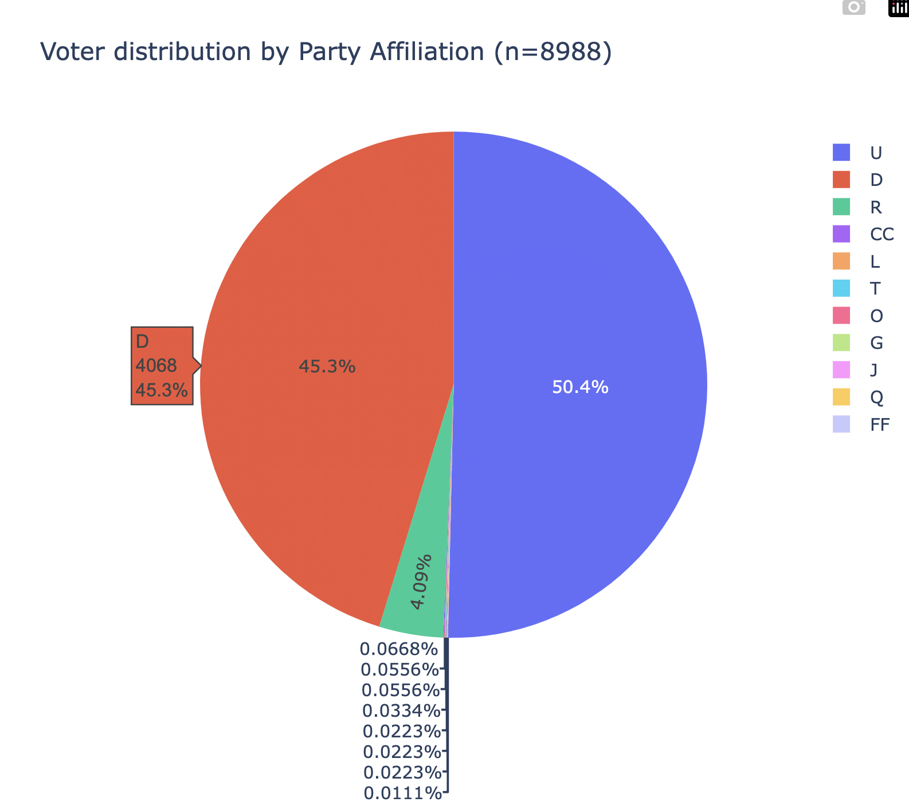
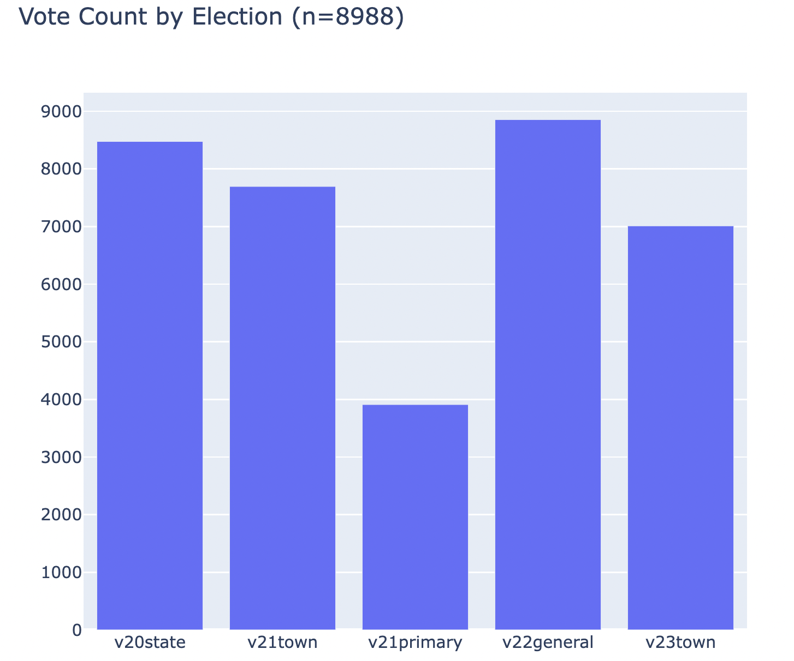

Assignment 8: External Data, Filtering and Graphing
due by 9:00 p.m. EDT on Friday 10/31/2025
Learning Objectives
After completing this assignment, students will be able to:
-
Define a Django model to represent records from a .CSV data file.
-
Import records from a .CSV file to create model instances.
-
Create a list view to show a large number of records, as well as creating an HTML form-based filtering scheme to show a smaller number of records.
-
Create graphs and incorporate these into the web application.
Sample Implementation
Here is a sample implementation: Voter Analytics Application.
You do not need to match the data of this example, or even the way it is formatted. The look and feel of the application, as well as the data you display, is entirely up to you.
Preliminaries
In your work on this assignment, make sure to abide by the collaboration policies of the course.
If you have questions while working on this assignment, please post them on Piazza! This is the best way to get a quick response from your classmates and the course staff.
For each problem in this problem set, we will be writing or evaluating some Python code. You are encouraged to use the VS Code IDE which will be discuss/presented in class, but you are welcome to use another IDE if you choose.
Important Guidelines: Comments and Docstrings
-
Refer to the class Coding Standards for important style guidelines. The grader will be awarding/deducting points for writing code that conforms to these standards.
-
Every program file must begin with a descriptive header comment that includes your name, username/BU email, and a brief description of the work contained in the file.
-
Every function/method must include a descriptive docstring that explains what the function does and identifies/defines each of the parameters to the function.
Overview
In this assignment, you will work with a large external data set and build a web application to view and filter the records in that data set.
Suppose that your friend has decided to stand for election to the select board in a town election in Newton, Massachusetts. She learns that you are a data wizard (computer scientist) and asks for your help in better understanding the voters in town, to help create a strategy to target certain voters for outreach (e.g., postcards, visits).
There are over 58,000 registered voters in Newton. Contacting all of them would be prohibitive due to the sheer number, geographic dispersion, and time and money constraints. Instead, you will create a web application to help your friend’s campaign filter the voters to find the ones who are most likely to vote for her.
Task 1: Modeling and Importing Data Records
-
Create a new web application within your Django project called
voter_analytics. Do the requisite set-up work to create this new application. -
Download this data file: newton_voters.csv, which contains a data set about registered voters in the town of Newton, MA.
Data Definition
The unique identifier (index) in this file is the ‘Voter ID Number’. You should not need to use this field. Many of the fields within this file are self explanatory:
* Last Name * First Name * Residential Address - Street Number * Residential Address - Street Name * Residential Address - Apartment Number * Residential Address - Zip Code * Date of Birth * Date of Registration * Party Affiliation (**note, this is a 2-character wide field**) * Precinct Number
These fields indicate whether or not a given voter participated in several recent elections:
* v20state * v21town * v21primary * v22general * v23town
The
voter_scoreis a numeric value, indicating how many of the past 5 elections the voter participated in. -
Create a
Votermodel definition to represent a registered voter. You have a lot of latitude in selecting the names and data types of fields, as well as how to create a string representation of thisVoterdata. Use your best judgment. -
In your
models.pyfile, write a function calledload_datato process the CSV data file, and loadVoters into your Django database.Execute the function, and verify that it worked correctly to create/save your data records.
Important: Add files to git!
-
You’ve reached a good stopping point!
-
This is an excellent time to add your files to git, commit your changes, and push your changes to GitHub before anything gets F@&#ed up.
Task 2: Viewing and Filtering Records
-
Create a web interface to provide a listing of
Voterrecords.Use the generic
ListViewas a starting point.Assign the URL pattern
''with the URL namevotersto reach this page.You may choose to show a subset of the fields on the
ListView, but you must include eachVoter‘s first name, last name, street address, date of birth, party affiliation, and voter score.Use Django’s pagination feature to be able to show pages of 100 records at a time.
-
Create an HTML form to filter the voter listing. The form should allow filtering the
Voters by (any of):-
Party affiliation (drop-down list)
-
Minimum date of birth (a drop-down list by calendar year)
-
Maximum date of birth (a drop-down list by calendar year)
-
Voter Score (a drop-down list)
-
Whether they voted in specific elections (check boxes)
The search should be able to accurately filter any selection of criteria, and none of the filters are required. For example, it should be possible to find voters who are born after 1975 but before 2000, who have a voter score of 4 (but without specifying their party affiliation or specific elections).
Incorporate this form into the page which shows the listing of all
Voters, such that you can use the form to filter the results by the above criteria.Note, the party-affiliation is a 2-character wide field. Some party abbreviations are only 1 character long, but have a trailing space (e.g.,
'U 'or'D '). We do not have an opinion about whether you strip off this trailing space, but you must be consistent or it will not work. -
-
Create a
DetailViewto show a page for a singleVoterrecord. Assign the URL pattern'voter/<int:pk>'with the URL namevoterto reach this page. In the template which displays the list of allVoters, add a link to reach the detail page for a single voter.On the detail page, show all fields. Include the
Voter‘s birth date, voter registration date, and whether they voted in each of the past elections (true of false) values.In addition, create a link to load a Google map to show the address of the individual
Voter, which would be useful to send a campaign volunteer out to visit them to discuss the issues. -
Add navigation links between your pages.
Task 3: Graphing Results
In this task, you will create some illustrative graphs to describe the Voter data.
To build these graphs, you will need to install the plotly package.
An example will be show in class on Thursday 10/30/25.
Begin by thinking which components from Task 2 you can re-use for task 3.
-
Create a web interface to provide graph(s) of aggregate data about
Voterrecords.Use the generic
ListViewas a starting point.Assign the URL pattern
'graphs'with the URL name'graphs'to reach this page.In this view, you will need to implement/override the
get_context_datamethod to create the graphs usingplotly, and add thedivcode representation of the graph(s) to the context data for use in a template.Create a template called
graphs.htmlto display the graphs. -
Create the following graphs, which will all display on the same web page.
-
A histogram (bar chart), illustrating the distribution of
Voters by their year of birth. For example:
-
A pie chart illustrating the distribution of
Voters by their party affiliation. For example:
-
A histogram (bar chart) illustrating the distribution of
Voters by their participation in each of the 5 elections (i.e., the count of how many voted in each election). For example:
-
-
Re-use your HTML form from task 2 to filter the
Voters by (any of):-
Party affiliation (drop-down list)
-
Minimum date of birth (a drop-down list by calendar year)
-
Maximum date of birth (a drop-down list by calendar year)
-
Voter Score (a drop-down list)
-
Whether they voted in specific elections (check boxes)
The search should be able to accurately filter any selection of criteria, and none of the filters are required. For example, it should be possible to find voters who are born after 1975 but before 2000, who have a voter score of 4 (but without specifying their party affiliation or specific elections).
Incorporate this form into the page which shows the graphs of all
Voters, such that you can use the form to filter the results by the above criteria. By default, if no form fields were selected, you will display graphs for allVoters. -
Important: Add files to git!
-
You’ve reached a good stopping point!
-
This is an excellent time to add your files to git, commit your changes, and push your changes to GitHub before anything gets F@&#ed up.
Deployment to cs-webapps
- Deploy your web application to the
cs-webapps.bu.edu.
Follow the deployment instructions here.
-
Test your web application on
cs-webapps.bu.eduto ensure that everything works correctly. -
Resolve any deployment issues.
Submitting Your Work
10 points; will be assigned by the autograder, verifying that you have submitted the correct files/URL, and testing that you website exists at the specified URL. 90 points; will be testing your application and code review
Log in to GradeScope to submit your work.
Be sure to name your files correctly!
-
Create a text file within your main django directory called
voters_url.txt, containing the URL to your web page, and nothing else.For example:
https://cs-webapps.bu.edu/azs/cs412/voter_analytics/.This file will be used by the autograder to locate your web page, so you must get the URL exactly correct, and you must not include any other text or code in the file.
-
Add the teaching staff as collaborators to your GitHub repository with
bu-cs412. Read-only access is fine.Create a text file called
github_url.txtin the root of your project (e.g.,djangodirectory). Paste your GitHub URL in the file.Add these files to your git repository using
`git add -A`.
Commit this to your git repository, using
`git commit -m "Added voters_url.txt"`
Push it to GitHub, using
`git push origin main`
-
Log in to GradeScope to submit your work.
In the Gradescope upload page, upload these two files:
-
a8_url.txt -
github_url.txt
-
Notes:
-
Upload these files to Gradescope before the deadline.
-
When you upload, the autograder script will process your file(s).
-
You may resubmit as many times as you like before the deadline, and only the grade from the last submission will be counted.